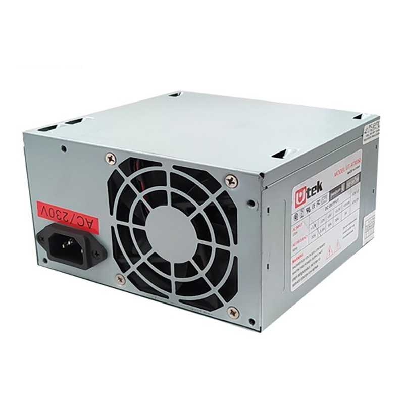
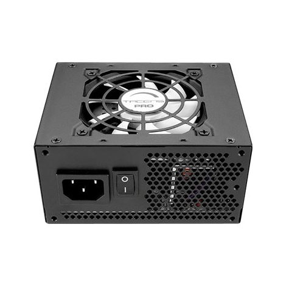
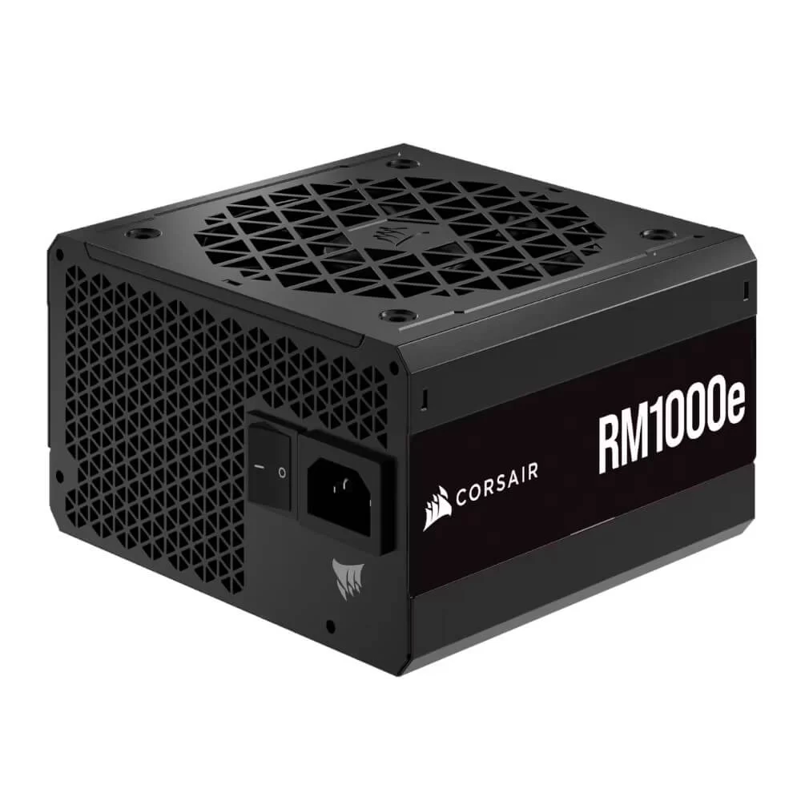
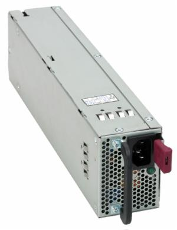
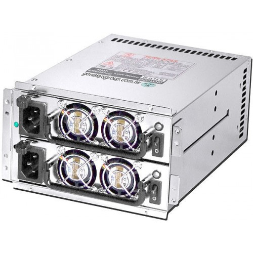

Fuente de Poder
La fuente de poder, también conocida como unidad de suministro de energía o PSU (Power Supply Unit), es un componente crucial en una computadora por diversas razones:
- Suministro de Energía: La fuente de poder convierte la corriente eléctrica de la toma de corriente en la energía necesaria para que la computadora funcione. Proporciona energía a todos los componentes internos, como la placa madre, la CPU, la GPU y los dispositivos de almacenamiento.
- Estabilidad del Sistema: Una fuente de poder de calidad contribuye a la estabilidad del sistema. Un suministro de energía inestable puede provocar problemas, como reinicios inesperados o mal funcionamiento de los componentes.
- Protección de Componentes: Muchas fuentes de poder incluyen funciones de protección, como cortocircuitos, sobrecorriente y sobretensión. Estas protecciones ayudan a prevenir daños a los componentes internos en caso de fluctuaciones eléctricas.
- Eficiencia Energética: Fuentes de poder eficientes pueden ahorrar energía y reducir los costos operativos a lo largo del tiempo. Las PSU con certificación de eficiencia, como 80 PLUS, son una elección común para sistemas conscientes de la energía.
Tipos Comunes de Fuentes de Poder
- Fuente de Poder ATX: Ampliamente utilizada en computadoras de escritorio, sigue el estándar ATX (Advanced Technology eXtended) y se encuentra en diferentes capacidades de potencia.

- Fuente de Poder SFX: Diseñada para sistemas más pequeños, como HTPCs y computadoras compactas. SFX significa "Small Form Factor eXtended".

- Fuente de Poder Modular: Permite conectar solo los cables necesarios, lo que facilita la gestión del cableado y mejora el flujo de aire dentro del gabinete.

- Fuente de Poder para Servidores: Diseñada para sistemas de servidor con requisitos de potencia más altos y mayor estabilidad.

- Fuente de Poder Redundante: Utilizada en entornos críticos, como servidores empresariales, proporciona redundancia para garantizar la continuidad del servicio en caso de falla de una unidad.
